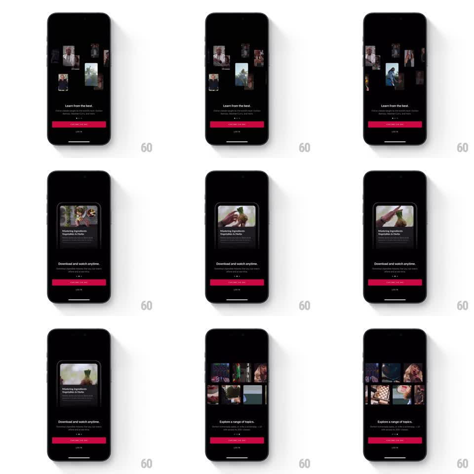

Media
Frame-by-frame

Rebuild this interaction 1:1: MasterClass onboarding value-prop carousel - horizontal swipes move between story pages ("Learn from the best", "Download and watch anytime", "Explore a range of topics") with parallax photo collages, springy page physics, and crossfading captions.

Rebuild this interaction 1:1: MasterClass onboarding value-prop carousel - horizontal swipes move between story pages ("Learn from the best", "Download and watch anytime", "Explore a range of topics") with parallax photo collages, springy page physics, and crossfading captions.
## Integration
Integration: stack-agnostic spec - springs given as stiffness/damping, timed motions as duration + curve; map every value to your framework and animation library of choice.
## Scene
Dark onboarding screen: a photo collage hero zone (scattered instructor portraits, then a video-still collage, then a topic grid), headline + subcopy below, a red "EXPLORE FOR FREE" button, LOG IN link, and a three-dot page indicator.
## Motion spec
Pattern: paged horizontal swipe with parallax collage + crossfading text.
- Swipe: pages track the finger 1:1; release snaps to the nearest page (spring ~280/26, ~350ms).
- Parallax: the collage tiles move at ~0.5x the page translation, individual tiles offset from each other (~10-20% depth variance), so the collage feels layered during the swipe.
- Text: outgoing headline/subcopy crossfade and drift ~20px opposite the swipe direction (~250ms) as the incoming copy fades in.
- Page indicator: active dot stretches/red-tints to the new position with a 150ms ease.
- Button and LOG IN stay fixed.
## Calibration
- Collage parallax must keep every tile fully inside the hero zone - no tile clips at rest.
- Text crossfade overlaps the snap, never after it.
## Reduced motion
Pages crossfade; no parallax drift.
## Don't miss
- The collage is per-page (portraits vs. video stills vs. topic grid) and changes WITH the swipe, not after.
- Active page dot is visually distinct (red, wider).